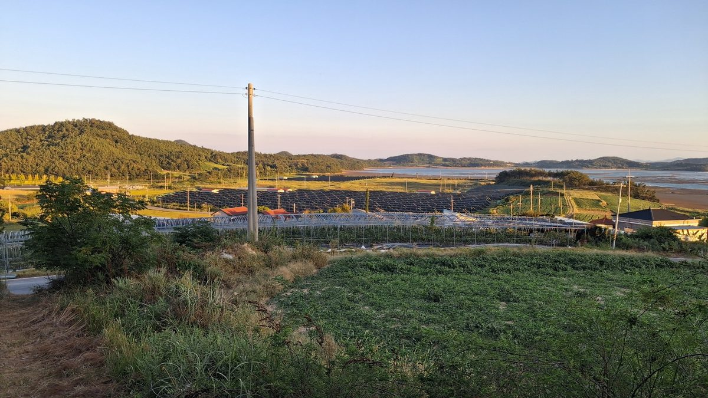

신한은행, 발전소 인근 주민 지분·채권 참여 자금 대는 1,700억 원 규모 주민수익공유펀드에 500억 원 투자

신한자산운용 조성, 주민이 주주·대주단으로 참여할 초기 투자금 조달 지원…금리·참여 한도·투자 대상 사업은 발표에 없어, 착공 전 개발 단계 겨냥한 3,000억 원 생산적금융펀드에도 2,000억 원
신한은행이 신한자산운용이 조성하는 1,700억 원 규모의 '주민수익공유펀드'에 500억 원을 투자하는 계약을 10월 27일 맺었다고 28일 밝혔다. 이 펀드는 발전소 인근 주민이 재생에너지 발전사업에 지분이나 채권 형태로 참여할 때 드는 초기 투자금을 마련하도록 돕는 용도로, 주민은 주주나 대주단으로 참여해 전력 판매 수익을 정기적으로 배당받는 구조라고 은행은 설명했다. 은행 측은 기존 신재생 펀드가 발전사업 법인에만 자본금을 넣었던 것과 달리, 이 펀드는 주민 쪽 투자금 조달을 직접 지원한다는 점을 차이로 들었다. 주민참여형 발전사업은 농어촌 주민이 수천만 원에서 수억 원에 이르는 참여 자금을 한꺼번에 마련하기 어려워 확산이 더뎠고, 현장에서는 금융기관이 명의를 빌리거나 참여 비율만 형식적으로 맞추는 이른바 '무늬만 주민참여'가 문제로 지적돼 왔다. 신한은행은 이와 별도로 신한라이프와 함께 결성한 3,000억 원 규모 '생산적금융펀드'에 2,000억 원을 넣었으며, 신한자산운용이 운용하는 이 펀드는 인허가·환경영향평가·계통 연계 등 착공 전 단계에 있는 해상풍력·대형 태양광 사업에 투자한다. 이번 발표에는 주민 대상 자금의 금리와 1인당 참여 한도, 펀드가 처음 투자할 발전사업은 담기지 않았다.
시민에너지 관점
주민참여형 재생에너지의 가장 큰 벽이 주민 출자금이라는 점에서, 금융권이 주민 몫의 자금을 따로 떼어 1,700억 원 규모로 마련하기 시작한 것은 의미 있는 변화다. 다만 주민이 빌린 돈으로 지분을 사는 구조라면 이자와 배당 조건에 따라 주민 손에 남는 몫이 크게 달라지고, 사업이 부진하면 빚만 남는다는 걱정이 나올 수밖에 없다. 네덜란드는 에너지협동조합이 인허가 전 개발 단계에 쓸 돈을 빌리고 사업이 성사되면 갚는 전용 개발기금(Ontwikkelfonds)을 두어, 주민 조직이 처음부터 사업의 주인으로 나서도록 했다. 국내도 주민참여 자금의 금리·배분 조건을 공개하게 하고, 공공 저리 융자와 사회연대경제 방식의 시민 출자를 함께 열어 주민이 개발 단계부터 결정권을 쥐도록 제도를 다듬어야 한다.
출처: 메가경제 2026-10-28 박성태 원문 보기
新韓銀行、発電所周辺住民の持分・債券参加資金を賄う1,700億ウォン規模の住民収益共有ファンドに500億ウォン投資
新韓資産運用が組成、住民が株主・貸付団として参加するための初期投資資金の調達を支援…金利・参加上限・投資対象事業は発表になし、着工前の開発段階を狙う3,000億ウォンの生産的金融ファンドにも2,000億ウォン
新韓銀行は、新韓資産運用が組成する1,700億ウォン規模の「住民収益共有ファンド」に500億ウォンを投資する契約を10月27日に結んだと28日明らかにした。このファンドは、発電所周辺の住民が再生可能エネルギー発電事業に持分や債券の形で参加する際に必要な初期投資資金を用意できるよう支援するもので、住民は株主や貸付団として参加し、電力販売収益を定期的に配当として受け取る仕組みだと銀行は説明した。銀行側は、従来の再エネファンドが発電事業法人にだけ資本金を投じていたのに対し、このファンドは住民側の投資資金調達を直接支援する点が違うとしている。住民参加型の発電事業は、農漁村の住民が数千万ウォンから数億ウォンに上る参加資金を一度に用意するのが難しく広がりが遅れており、現場では金融機関が名義を借りたり参加比率だけを形式的に合わせたりする、いわゆる「名ばかり住民参加」が問題として指摘されてきた。新韓銀行はこれとは別に、新韓ライフと共に結成した3,000億ウォン規模の「生産的金融ファンド」に2,000億ウォンを投じ、新韓資産運用が運用するこのファンドは、許認可・環境影響評価・系統連系など着工前の段階にある洋上風力・大型太陽光事業に投資する。今回の発表には、住民向け資金の金利や1人当たりの参加上限、ファンドが最初に投資する発電事業は含まれていない。
市民エネルギーの視点
住民参加型再生可能エネルギーの最大の壁が住民の出資金であることを考えれば、金融機関が住民の取り分のための資金を1,700億ウォン規模で別に用意し始めたことは意味のある変化だ。ただ、住民が借りたお金で持分を買う仕組みであれば、利息と配当の条件次第で住民の手元に残る分は大きく変わり、事業が振るわなければ借金だけが残るという懸念が出るのは避けられない。オランダは、エネルギー協同組合が許認可前の開発段階に使う資金を借り、事業が実現すれば返済する専用の開発基金（Ontwikkelfonds）を設け、住民組織が最初から事業の持ち主として乗り出せるようにした。韓国でも住民参加資金の金利・配分条件を公開させ、公的な低利融資と社会連帯経済方式の市民出資を併せて開き、住民が開発段階から決定権を握れるよう制度を整えるべきだ。
出典: メガ経済 2026-10-28 パク・ソンテ 原文を読む
新韩银行向1,700亿韩元规模居民收益共享基金投资500亿韩元，为发电站周边居民参与股权和债券筹措资金
由新韩资产运用设立，支持居民以股东或贷款团身份参与所需的初期投资资金…利率、参与上限和投资项目未在公告中披露，另向瞄准开工前开发阶段的3,000亿韩元生产性金融基金投入2,000亿韩元
新韩银行28日表示，已于10月27日签约，向新韩资产运用设立的1,700亿韩元规模"居民收益共享基金"投资500亿韩元。银行介绍，该基金用于帮助发电站周边居民筹措以股权或债券形式参与可再生能源发电项目所需的初期投资资金，居民以股东或贷款团身份参与，定期获得售电收益分红。银行方面称，以往的新能源基金只向发电项目法人注入资本金，而这只基金直接支持居民一方的投资资金筹措，这是两者的区别。居民参与型发电项目一直推广缓慢，原因是农渔村居民难以一次性拿出数千万至数亿韩元的参与资金；现场还被指出存在金融机构借用名义、或只在形式上凑足参与比例的所谓"挂名居民参与"问题。此外，新韩银行还向与新韩人寿共同组建的3,000亿韩元规模"生产性金融基金"投入2,000亿韩元，该基金由新韩资产运用管理，投资处于许可审批、环境影响评价、并网等开工前阶段的海上风电和大型光伏项目。此次公告没有包括面向居民资金的利率、每人参与上限以及基金首个投资的发电项目。
市民能源视角
居民出资一直是居民参与型可再生能源最大的门槛，金融机构开始以1,700亿韩元的规模专门为居民份额准备资金，是一个有意义的变化。但如果居民是用借来的钱购买股权，利息和分红条件将大幅左右最终落到居民手中的份额，项目一旦不景气就只剩下债务，这样的担忧在所难免。荷兰设立了专门的开发基金（Ontwikkelfonds），让能源合作社借款用于许可前的开发阶段、项目落地后再偿还，使居民组织从一开始就能以项目主人的身份参与。韩国也应要求公开居民参与资金的利率和分配条件，同时开放公共低息贷款和社会连带经济方式的市民出资，完善制度，让居民从开发阶段就掌握决定权。
来源: Mega经济 2026-10-28 Park Seong-tae 查看原文
Shinhan Bank puts 50 billion won into a 170 billion won resident profit-sharing fund that finances local residents' equity and bond stakes in power projects
Set up by Shinhan Asset Management to help residents near power plants raise the upfront money to join as shareholders or lenders; rates, individual limits and target projects were not announced, and a further 200 billion won goes into a 300 billion won fund for pre-construction development
Shinhan Bank said on October 28 that it signed a contract the previous day to invest 50 billion won in a 170 billion won "resident profit-sharing fund" being set up by Shinhan Asset Management. The bank said the fund is meant to help residents living near power plants raise the upfront money they need to take part in renewable energy projects through equity or bonds, joining as shareholders or members of the lending syndicate and receiving regular payouts from electricity sales. According to the bank, the difference from existing renewable energy funds is that those put capital only into the project company, while this fund directly supports residents in financing their own stakes. Resident-participation projects have spread slowly because people in farming and fishing villages struggle to find tens of millions to hundreds of millions of won at once, and critics have pointed to so-called token resident participation, in which financial institutions borrow residents' names or only formally meet participation ratios. Separately, Shinhan Bank committed 200 billion won to a 300 billion won "productive finance fund" formed with Shinhan Life; managed by Shinhan Asset Management, it invests in offshore wind and large solar projects still at the pre-construction stage of permitting, environmental impact assessment and grid connection. The announcement did not include the interest rate on money for residents, any per-person participation limit or the first power project the fund will back.
Citizen Energy View
Since residents' equity contributions are the biggest barrier to community renewables, a financial group setting aside 170 billion won specifically for residents' shares is a meaningful shift. But if residents buy their stakes with borrowed money, interest and dividend terms will largely decide how much ends up in their hands, and the worry that a weak project could leave them with nothing but debt is unavoidable. The Netherlands set up a dedicated development fund (Ontwikkelfonds) from which energy cooperatives borrow for the pre-permit development phase and repay once the project goes ahead, so that community groups can act as owners from the start. Korea should likewise require the rates and profit-sharing terms of resident participation finance to be disclosed, and open public low-interest loans and social and solidarity economy-style citizen investment alongside it, so residents hold decision-making power from the development stage.
Source: Mega Economy 2026-10-28 Park Seong-tae Read the original